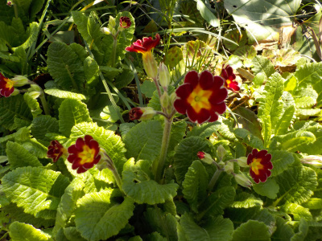
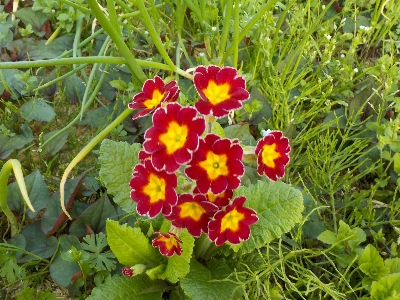

更新日 : 2023/04/01

鉢植えとは違った魅力がありますね。
どちらかというと、こっちが好きかな。
更新日 : 2024/04/13

種が飛んだんでしょう。勝手に育つくらい丈夫な植物なんでしょうね。
生命力が強い品種はいいですね。
【おいしいものを食べよう。】【たくさん寝よう。】
【ソロ活をしよう!】【季節感のあることをしよう。】【動画視聴はほどほどに。】【当サイトの全てのコンテンツは無断転載禁止です。】